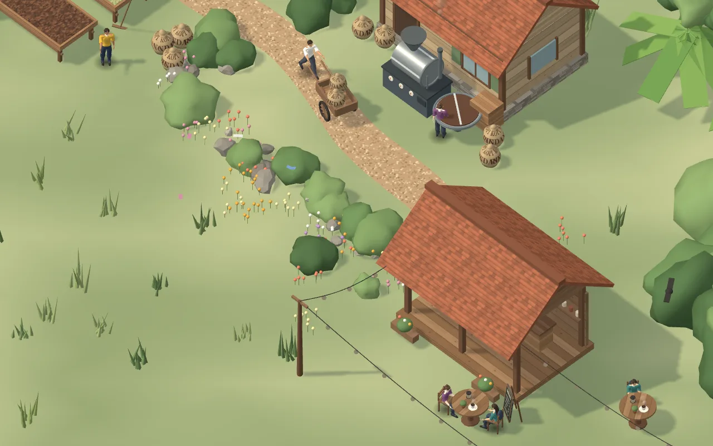

Pagi · Kebun
Biji kopi mulai dari lereng yang berkabut
Buah merah dipetik satu per satu di kebun terasering. Hanya yang matang yang dibawa turun.
Kebun Lereng UtaraKetinggian 1.250 mdpl · panen Mei–Agustus
Gulir pelan, kamera ikut berjalan
Siang · Jemur
Dijemur di para-para sampai kering merata
Biji dibalik tiap beberapa jam. Kadar airnya dicek sebelum masuk karung.
Para-para 2Hari ke-9 dari 14 · kadar air 13%
Sore · Sangrai
Disangrai kecil-kecilan, tiap batch dicatat
Mesin drum menyangrai 5 kg per putaran. Aroma jadi tanda bahwa biji hampir matang.
Batch #128Medium · 11 menit 40 detik
Antar · Jalan setapak
Karung dibawa ke kedai lewat jalan kampung
Dari tempat sangrai ke kedai hanya beberapa menit. Biji sampai masih segar.
Stok kedai12 kg masuk pagi ini
Senja · Kedai
Diseduh di bawah pohon rindang
Meja kayu, lampu gantung yang menyala satu per satu, dan cangkir yang masih mengepul.
Kopi susu gula arenRp 22.000 · buka 10.00–22.00
Gambaran utuh
Pengunjung melihat ceritanya, bukan hanya daftar menu
- 5tahap dari kebun ke cangkir
- 1pohon rindang jadi ikon kedai
- 24 jamhalaman tetap bisa dibuka kapan saja
Proyek konsep: kedai dan angka di halaman ini fiktif, hanya contoh.